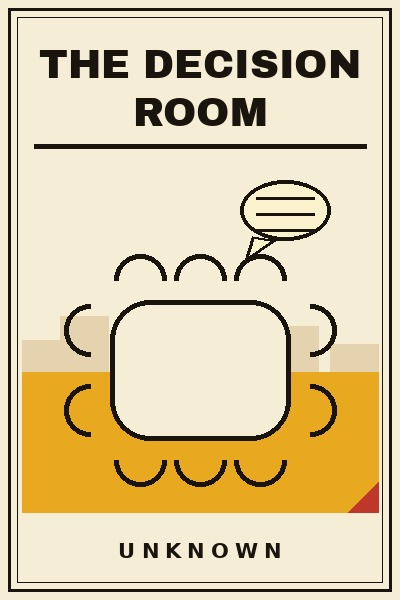

Library › Leadership
The Decision Room - Summary & Key Lessons

Ten lessons on deciding together without drowning: dissent, premortems, and the group craft of choices that shape companies.
📖 OPEN THE FULL INTERACTIVE BREAKDOWN →🌐 Read it in Hindi, Hinglish, Gujarati, Tamil & 22 more languages - free, with audio.
💡 The Big Idea
One bad decision rarely sinks a company. It is the room that made it: the nods, the silence, the boss's face, the dissent that died in someone's throat. This book is about the group craft of deciding: how to design a room where the best argument wins instead of the senior laugh, how to separate the decision from the decider, how to hear the quiet expert before the loud ally, and how to write the decision down so the future can argue with the past honestly. The tools are old and proven: premortems, red teams, decision journals, dissenters with names and protection. The failures are famous and preventable: the invincible rooms that nodded their way into history's footnotes. Groups decide most of what matters in companies, and group decisions have a technology all their own. This book is that technology, taught plainly, for anyone who has ever watched a meeting agree its way into a disaster.
🧠 The 10 Key Lessons
Lesson 1: The Room Is the Decision
Chapter 1: Design Before Debate
Before any consequential choice, design the room itself: who is in it, who speaks, in what order, with what information, under what rule for closing. Most decisions are made by whoever happened to attend, which is a design accident, and by the boss's visible preference, which is a design flaw. The room's composition decides the answer more than the debate does: add the person who knows, subtract the person who cannot be disagreed with, and set the speaking order so hierarchy does not pre-write the conclusion. This is unglamorous work, and it is where decision quality is actually manufactured.
📖 Example: The fiasco investigations that became management classics, from the Bay of Pigs to the board reports after the great bank collapses, converge on the same finding: the fatal options were pre-selected by who was in the room and what could safely be said in it. Read the full example →
⚡ Do this: For your next three significant decisions, write the room design before the meeting: attendees, speaking order, information shared in advance, and the closing rule. Change one thing each time and note what the answer does.
Lesson 2: The Dissenter With a Name
Chapter 2: Official Disagreement
Voluntary dissent fails in groups, because the social cost of being the first to object is real and rising in seniority gaps. The fix is institutional: appoint a named dissenter whose formal job is the strongest case against, rotate the role so it builds no ego, and protect the person visibly, especially when they are wrong. The dissenter's contribution is not usually a veto; it is the forcing function that makes the majority articulate what it has been assuming. Rooms without a dissenter are not confident. They are unexamined.
📖 Example: General Motors' Alfred Sloan tabled a decision when no one disagreed, and the Vatican's own devils advocates are centuries old; the modern catastrophes from launch pads to trading floors each had an engineer or analyst who saw it and had no protected channel to say so. Read the full example →
⚡ Do this: Appoint a named dissenter for every significant decision this month, rotating across your team. Thank them in the minutes by name. Track how many decisions change shape because of the argument they force.
Lesson 3: The Premortem
Chapter 3: Fail the Project in Advance
A premortem is simple and devastatingly effective: before committing, the team imagines the decision has failed spectacularly a year from now, and each person writes the story of why. The exercise legitimises doubt, surfaces the risks that politeness had buried, and converts the quiet worrier's anxiety into a list the group can act on. Unlike a review, which asks is this good, the premortem asks what kills this, and the framing bypasses the optimism that meetings run on. Ten minutes of premortem regularly buys more safety than months of confident planning.
📖 Example: The research on premortems, born from psychology's prospect theory and adopted by the most deliberate industries from aviation to large-scale infrastructure, shows teams identifying materially more risks than standard reviews; the catastrophes that skip it usually had the risks named somewhere in private and nowhere in the plan. Read the full example →
⚡ Do this: Run a ten-minute premortem before your next launch: everyone writes the failure story independently, then reads them aloud. Turn the top three killers into owners and dates before you commit.
Lesson 4: Separate the Idea From the Face
Chapter 4: Status Is Not Evidence
Groups consistently mistake the volume, seniority or polish of an idea's owner for the quality of the idea itself. The countermeasure is procedural separation: ideas argued on paper or anonymised, speakers polled before seniors speak, juniors heard first. Train the room to answer one question on every proposal: if a stranger had said this, what would we think? The discipline sounds trivial and cuts astonishingly deep, because status contamination is the quiet tax on every hierarchy's intelligence, paid daily in nudges and nods.
📖 Example: The product review processes that produce reliably good judgement, documented at the great engineering companies and their Indian imitators, deliberately strip titles from the debate, while the failed launches beside them are littered with ideas that survived on the owner's seniority and died on contact with the market. Read the full example →
⚡ Do this: For your next contested decision, collect written positions before the meeting and read them without names attached. Ask the stranger question out loud. Note which 'obvious' consensus loses weight when the face is removed.
Lesson 5: Hear the Quiet Expert
Chapter 5: Epistemic Round Order
In any room there is usually one person who knows, and often several people who do not, and the speaking order decides which the decision hears. The craft is epistemic round order: the most informed and least senior speak first, the most powerful speak last, and everyone speaks before any consensus forms, because early anchors are nearly impossible to dislodge. The boss's genuine question, asked early and honestly, what do we know that I do not, is the highest-leverage sentence available in any meeting, and it costs nothing but the ego to mean it.
📖 Example: The inquiry reports into the great preventable disasters, from shuttle launches to trading collapses, repeatedly find the crucial knowledge present but spoken late or never, anchored out by an early senior opinion that the room then assembled around. Read the full example →
⚡ Do this: Set the speaking order by information and inverse seniority for your next three decision meetings. The most senior voice speaks last, always. Record what surfaced in the first ten minutes that the old order would never have heard.
Lesson 6: One-Way and Two-Way Doors
Chapter 6: Match Speed to Reversibility
Groups decide badly partly because they treat all decisions as equally grave, crawling over reversible choices and leaping past irreversible ones. The discipline is door classification: a one-way door, the factory, the acquisition, the public promise, deserves slow room, wide input and formal process; a two-way door, the price test, the pilot, the feature flag, deserves one owner and speed. Name the door type out loud at the start of every decision. Half of all meeting waste is two-way doors being treated as one-way, and half of all catastrophe is the reverse.
📖 Example: The most quoted operating philosophy of modern commerce, walking through door types with different speeds, came from a founder whose company out-decided larger rivals for decades; the zombie projects beside it died of the opposite habit, one speed for everything, always the wrong one. Read the full example →
⚡ Do this: Classify every decision on your plate this week as one-way or two-way, in writing. Give two-way doors to single owners with a deadline. Reserve the full room for the one-way list, and spend the saved hours there.
Lesson 7: The Decision Journal
Chapter 7: Memory Is an Algorithm
Human memory quietly rewrites decisions to match outcomes, which is why organisations repeat their mistakes with total sincerity. The decision journal is the antidote: at the moment of choice, record the decision, the reasoning, the alternatives rejected, the expected outcome and the confidence level. Revisit at a fixed date and let the paper argue with the memory. The journal builds calibration over years, the rare meta-skill of knowing which of your judgements to trust, and it converts hindsight bias from a curse into a curriculum.
📖 Example: The investors and operators famous for long-run judgement, from legendary fund managers to serial founders, overwhelmingly keep some version of the journal, and the organisations that escaped repeated blunders usually did so by writing decisions down where the next year could confront them. Read the full example →
⚡ Do this: Start a decision journal this week: one page per significant choice, five fields, dated review. Revisit your first entry in ninety days. The gap between what you expected and what the page says is the tuition.
Lesson 8: Disagree and Commit
Chapter 8: The Closing Rule
Debate has to end, and how it ends decides whether execution follows. The closing rule that works: every voice heard, the decider decides, and the room commits in public, dissenters included, with the disagreement documented respectfully in the file. Disagree and commit is not obedience culture; it is the treaty that lets people argue hard because losing is survivable and sabotage is shameful. Without the treaty, organisations rot toward two failure modes: meetings that avoid conflict, and conflicts that continue as guerrilla warfare long after the meeting ends.
📖 Example: The executive teams that executed cleanly through disagreement, documented across global tech and Indian industry, all ran explicit commit rituals, minuted dissent and public alignment, while the talent-stacked teams beside them executed their losing arguments as quiet sabotage for quarters after the vote. Read the full example →
⚡ Do this: Adopt the closing ritual this month: decider decides, dissent minuted, commitment spoken aloud by each attendee, including you. Enforce it once, visibly, when someone relitigates. The room will learn the treaty after one demonstration.
Lesson 9: The Reversal Review
Chapter 9: Killing Your Own Decision
Strong decision cultures institutionalise the right to be wrong: fixed review dates where the decision itself, not its execution, is on trial. The reversal review asks three questions: did the outcome match the journal's expectation, has any assumption died since the decision, and knowing what we now know, would we decide again? Changing course is then a documented, dignified act rather than a face-saving smear. The organisations afraid to reverse are the ones that compound small wrong decisions into enormous ones, because admitting the first felt cheaper than reversing the tenth.
📖 Example: The strategy reversals that saved companies, from product pivots to market exits, are remembered as courage in the histories, and each one required a leadership culture where reversal was procedural rather than personal; the pride-frozen counterparts appear in this book's graveyard with regularity. Read the full example →
⚡ Do this: Put a reversal review on the calendar for each significant decision: ninety days out, journal in hand, three questions on the agenda. Thank publicly, in the review, whoever says the assumption died. Reversal is a skill; schedule its practice.
Lesson 10: The Decision Culture
Chapter 10: Rooms That Compound
Finish with the long game: an organisation whose rooms decide well by default. The culture is built from the pieces in this book, rooms designed before debate, named dissenters, premortems, round order, door types, journals, closing rules and reversal reviews, installed slowly as defaults rather than decrees. The compounding is quiet and enormous: fewer catastrophic bets, faster reversible ones, and a bench of people who have practised judgement in safe rooms until the stakes turned real. Decision quality is the one advantage competitors cannot copy from outside, because it lives in a thousand rooms no rival can attend.
📖 Example: The institutions that outlasted their founders, wars and cycles alike, from ancient councils to modern product empires, share the fingerprint of decision culture: better rooms, honestly run, year after year, while the charismatic-decision companies beside them lived and died by the availability of one reliable genius. Read the full example →
⚡ Do this: Pick two tools from this book and make them house defaults this quarter, premortems and the decision journal are the proven starters. Teach them in onboarding. Review in a year: the culture will be legible in the minutes.
✅ 5-Step Action Plan
- Write the room design before your next three significant decisions: who, what order, what rule.
- Appoint and protect a named dissenter for every big call, rotating the role.
- Run a ten-minute premortem before every launch and assign owners to the top three killers.
- Start the decision journal: five fields per choice, with a dated ninety-day review.
- Install two tools as house defaults this quarter and teach them at onboarding.
⚠️ When This Doesn't Work
This is a TheSmallBook Original: written in-house, published under the name Unknown, with no real author to credit. The toolkit is original; the examples are real public history (Sloan's tables, the premortem literature, the great inquiry reports) cited honestly from the record. Nothing here is governance or legal advice: board processes have their own law. Design your rooms and take the minutes honestly.
💀 The Graveyard Proves It
🚁 The Bay of Pigs Invasion - Groupthink's $53M Masterpiece of Bad Judgment. Burn: $53M, 114 dead, 1,200 captured - the CIA's worst defeat. Read the full case study →
💬 Best Quotes from The Decision Room
- “The quality of a decision is set by the design of the room, not the brains in it.”
- “Silence is not agreement. It is data you have not collected yet.”
- “Write the decision down, or the meeting will rewrite it in a year.”
Interactive version: mark lessons as read, listen in your language, share quote cards.